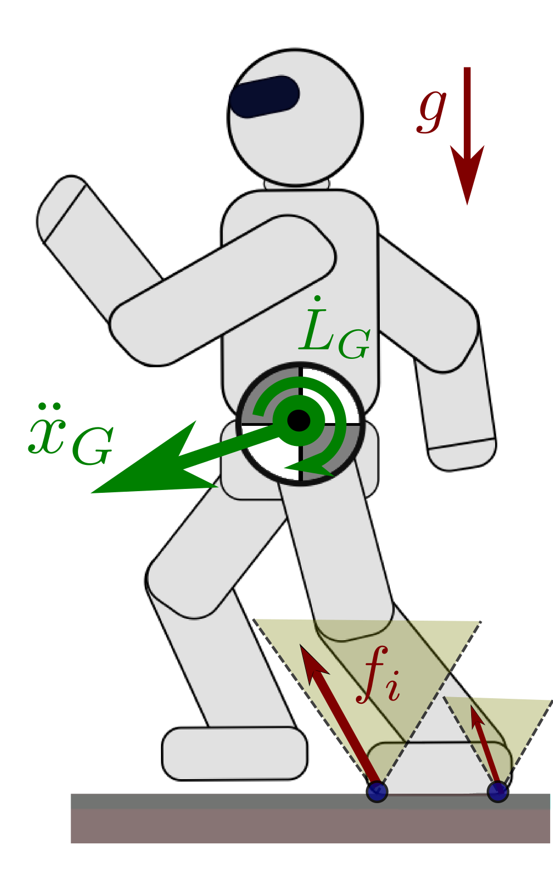

The Newton-Euler equations of motion correspond to the six unactuated
coordinates in the equations of motion
of our robots. Newton's equation applies to (linear) translational motions:
link i∑mip¨i=mg+contact i∑fiMeanwhile, Euler's equation applies to angular motions:
link i∑(pi−pG)×mip¨i+Iiω˙i+ωi×(Iiωi)=contact i∑(pi−pG)×fi+τiLet us detail notations and how these equations are used.
Newton's equation

Let pi denote the position in the world frame of the center of
mass of the robot's
ith link. Also, let mi denote the mass of link
i, and m=∑imi the total mass of the robot. The overall
center of mass G is located at the position pG in the world
frame such that:
mpG=link i∑mipiIn other words, the robot's center of mass is a convex combination of the
respective centers of mass of all of its links, where each link is weighed by
its respective mass.
Forces
The robot is subject to gravity and contact forces. Let g denote the
gravity vector. For a link i in contact with the environment, we write
fi the resultant force exerted on the link. Let hij
denote the internal force exerted by link i on link j. We
take the convention that hij=0 if links i and j
are not connected (similarly, fi=0 if link i is not in
contact). All force vectors are expressed in the world frame.
Equation
Newton's equation of motion links the resultant accelerations and forces:
link i∑mip¨i=link i∑mig+fi+link j=i∑hijA key point here is that hij=−hji by Newton's third law
of motion, so that internal forces vanish in this sum over all links:
∑i∑j=ihij=0. In concise form, Newton's
equation then binds the acceleration of the center of mass with the whole-body
resultant force.
Momentum
The linear momentum of the robot is defined by:
P:=mp˙GThen, Newton's equation can be written in concise form as:
P˙=mp¨G=mg+contact i∑fiIn other words, the rate of change of the linear momentum is equal to the
resultant of external forces exerted on the robot.
Euler's equation
Newton's equation is related to translational motions of the robot. Euler's
equation provides a similar relation for angular motions. Let Ri
denote the rotation matrix from the ith link frame to the
world frame, and ωi denote the spatial angular velocity of the link, that is,
the angular velocity from the link frame to the world frame expressed in the
world frame. Also, let Ii denote the inertia matrix of the
ith link, expressed in the world frame and taken at the
center of mass pi of the link. (Yes, it is verbose to be precise if
we want to define all our spatial vectors without ambiguity.)
Forces
For a link i in contact with the environment, we write τi
the resultant moment of contact forces exerted on the link at pi.
If the link is in point contact with the environment at pi, the
moment will be zero. If the link is in surface contact, both fi and
τi may be non-zero. See for instance the Section III of this
paper for more details on point and surface
contacts.
Equation
Euler's equation of motion links the angular momenta and resultant moments of
external forces:
link i∑(pi−pG)×mip¨i+Iiω˙i+ωi×(Iiωi)=link i∑(pi−pG)×(fi+mig)+τiAs a consequence of the definition of the center of mass as a convex
combination of links' centers of mass, terms involving the acceleration
g due to gravity vanish from the right-hand side of this equation:
link i∑(pi−pG)×mig=0This leaves us with:
link i∑(pi−pG)×mip¨i+Iiω˙i+ωi×(Iiωi)=contact i∑(pi−pG)×fi+τiNote how the right-hand summation is now over contacts only rather than over
links. By a similar argument to the vanishing of internal forces in the
translational case, the moments of internal forces do not appear in the
equation above. For details on this, see D'Alembert's principle which is the axiom
behind the vanishing of internal forces.
Momentum
The angular momentum of the robot, taken at the center of mass G, is
defined by:
LG:=link i∑(pi−pG)×mip˙i+IiωiThen, Euler's equation can be written in concise form as:
L˙G=contact i∑(pi−pG)×fi+τiIn other words, the rate of change of the angular momentum is equal to the
resultant moment of external forces exerted on the robot.
Variant with body angular vectors
We took care to specify all our spatial vectors and matrices above with respect
to the world frame. Let us denote by ωiℓ=Ri⊤ωi the body angular velocity of the ith link,
that is, the angular velocity from the link frame to the world frame expressed
in the link frame. Similarly, let Iiℓ=Ri⊤IiRi denote the inertia matrix of the ith link,
expressed in the link frame and taken at the center of mass pi of
the link, and let τiℓ=Ri⊤τi denote the
moment of contact forces with respect to pi in the link frame.
Euler's equation can equivalently be written as:
link i∑(pi−pG)×mip¨i+Ri(Iiℓω˙iℓ+ωiℓ×(Iiℓωiℓ))=contact i∑(pi−pG)×fi+τiℓYou can check this formula as an exercise.
Variant at the origin of the world frame
Together, the linear and angular momentum are the wrench coordinates of the robot's momentum. The linear
momentum is the resultant of the wrench, hence its coordinates are the same
everywhere, while the angular momentum is the moment of the wrench, whose
coordinates depend on the application point. We selected it so far as the
center of mass G, but we can apply Varignon formula to compute the
angular momentum at any other point. For instance, the origin O of the
world frame:
LO=LG+pG×P=link i∑pi×mip˙i+IiωiThen, Euler's equation can be written in concise form as:
L˙O=link i∑pi×(fi+mig)+τiEquivalently, expanding the expression of the angular momentum:
link i∑pi×mip¨i+Iiω˙i+ωi×(Iiωi)=link i∑pi×(fi+mig)+τiThe benefit of taking the angular momentum at the center of mass is to simplify
the right-hand side of this equation from a summation over links, with
gravity applied to each, to a summation over contacts, where only contact
forces are applied.
Newton-Euler with spatial vector algebra
When working with spatial vector algebra and wrench friction cones, it is common to express the left- and
right-hand sides of Newton-Euler equations as wrenches.
Newton-Euler as a wrench equation
In terms of these two wrenches, Newton-Euler equations become:
wc+wgi=0That is, at any point in time, the sum of gravity, inertial and external
contact wrenches is always zero. When the robot is not moving, that is the
inertial wrench is zero, we recognize the condition for static equilibrium:
external contact wrenches compensate gravity. When the robot is moving, the
condition generalizes to dynamic equilibrium: external contact wrenches
compensate for both gravity and inertial forces.
Note that this is an equality between wrenches, which means it holds for any
application point:
∀A,wAc+wAgi=0To prove that two wrenches are equal, we need them to have (1) the same
resultant force (true from Newton's equation) and (2) the same moment at a
given point (true from Euler's equation at the center of mass). In particular,
the equation holds for the origin O in the world frame:
wOc+wOgi=0Which results in the same Newton and Euler equations we derived above:
link i∑mi(p¨i−g)link i∑pi×mi(p¨i−g)+Iiω˙i+ωi×(Iiωi)=contact i∑fi=contact i∑pi×fi+τiOne advantage of this equivalent pair of equations is that, while left-hand
side summations are over all links, right-hand side summations are only over
contacts.
To go further
My favorite introduction to humanoid equations of motion is Some comments on
the structure of the dynamics of articulated motion by Wieber (2006). Check it out
if you are looking for a derivation of Newton and Euler equations from Gauss's
principle of least constraint. As a matter of fact, check it out even if you
are only mildly curious about it. I warmly recommend it.
The link between Newton-Euler equations, the gravito-inertial and contact
wrenches is central to the derivation of wrench friction cones and their projection for
reduced dynamic models such as ZMP support areas. These are useful e.g. for locomotion over
complex terrains yet with simple models.
Expressing Newton-Euler equations at the center of mass can be a practical idea
to linearize the (otherwise non-convex) problem of integrating forward
dynamics. For instance, Di Carlo et al. (2018) started from there to linearize
the model predictive control problem for the MIT Cheetah quadruped.
Discussion
Feel free to post a comment by e-mail using the form below. Your e-mail address will not be disclosed.